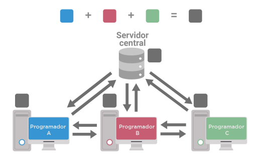

Git é um sistema de controle de versão distribuído gratuito e de código aberto projetado para lidar com tudo, desde projetos pequenos a muito grandes com velocidade e eficiência. O Git é fácil de aprender e tem uma pegada pequena com desempenho extremamente rápido . Ele supera ferramentas SCM como Subversion, CVS, Perforce e ClearCase com recursos como ramificação local barata , áreas de teste convenientes e vários fluxos de trabalho .
